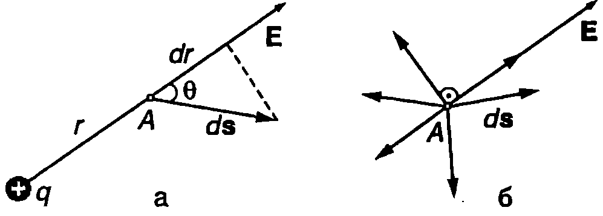
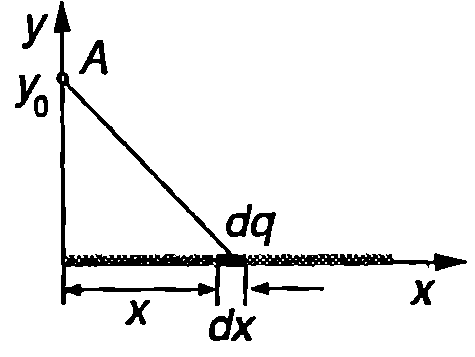
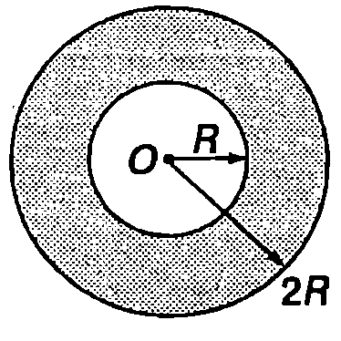

Гравитационните сили са консервативни — тяхната работа при преместване на материална точка не зависи от траекторията, а само от началното и от крайното положение (вж. пример 9.1. на стр.61 от част 1). Гравитационното взаимодействие между две материални точки се описва от закона на Нютон за гравитацията (вж.~\ref{sec:55} от част 1), а електростатичното взаимодействие между два точкови заряда от закона на Кулон (\eqref{eq:44.1}). Двата закона имат аналогична форма: кулоновите сили и гравитационните сили са централни сили и се изменят по закона на обратните квадрати. Затова по аналогичен начин, както при гравитационните сили, се доказва, че електростатичните сили също са консервативни.
Циркулация на електростатичното поле
На пробен заряд , поставен в електростатично поле с интензитет , действа сила . Работата на консервативните сили на полето при пренасяне на заряда между две произволни точки зависи единствено от положението на тези точки и не зависи от пътя, по който става пренасянето. При пренасянето на заряда по произволен затворен контур работата е нула (вж. част 1, \ref{sec:9}, стр.59):
където е векторът на елементарното преместване при обикалянето на контура .
Интегралът се нарича циркулация на вектора на интензитета на електричното поле. Както беше отбелязано в \ref{sec:25} (част 1, стр.136), величината циркулация може да се въведе за всяко векторно поле. При електростатичното поле циркулацията има нагледен физичен смисъл: тя е равна на работата, която извършват електростатичните сили при пренасянето на единица заряд (1 C) по затворения контур , т.е.
Следователно циркулацията на вектора по произволен затворен контур е равна на нула, което е следствие от консервативността на електростатичните сили. Чрез формула \eqref{eq:46.2} може да се даде определение на потенциално поле (без да се разглеждат сили): едно векторно поле е потенциално, ако циркулацията му по произволен затворен контур е равна на нула. Такива полета, както беше отбелязано в \ref{sec:25}, са безвихрови. Една от отличителните характеристики на безвихровите полета е, че силовите им линии не могат да са затворени криви линии.
Потенциал
Освен с интензитета , във всяка точка от пространството електростатичното поле се характеризира и с величината потенциал . По определение разликата в потенциалите на две точки и от полето е равна на взетата с обратен знак работа , която силите на полето извършват при пренасяне на единица положителен заряд от точка в точка :
Ще подчертаем, че потенциалната разлика между точките и е еднозначно определена, защото електростатичните сили са консервативни, т.е. работата зависи единствено от положението на двете точки. Абсолютната стойност на потенциала обаче не е определена еднозначно. Например, ако към потенциалите на точките и се прибави една и съща константа, тяхната потенциална разлика няма да се измени.
Единицата за потенциал се нарича волт (). Съгласно с формула \eqref{eq:46.3} разликата в потенциалите на две точки от полето е 1 V, ако при пренасяне на заряд 1 C от едната точка в другата точка електростатичните сили извършват работа 1 J, т.е.
Когато двете точки са безкрайно близо една до друга, потенциалната разлика е
Ако е известен интензитетът на полето, след интегриране на уравнение \eqref{eq:46.4} се определя потенциалът
където е константа на интегриране.
Константата може да има произволна стойност. За да се определи потенциалът еднозначно, трябва се приеме, че в дадена точка той има някаква предварително зададена стойност. (Обикновено се избира точка, в която потенциалът се приема за равен на нула.)
Пример 46.1
Протон се движи в електростатично поле. В точка с потенциал кинетичната му енергия е . Колко е кинетичната енергия на протона, когато преминава през точка с потенциал ? \end{psexample}
Решение
Нека точков заряд се намира в точка от електростатично поле. Ако са известни интензитетът и потенциалът на полето в тази точка, лесно може да се пресметне електричната сила , която действа на заряда, както и неговата електрична потенциална енергия . При решаване на задачи може да се използват двата познати от механиката метода:
- динамичен (със сили);
- енергетичен (с енергия).
Енергетичният метод се прилага най-лесно в случаите, когато на заредените частици действат само електростатични сили. Тогава пълната енергия на частицата — сумата от нейната кинетична енергия и електрична потенциална енергия — не се изменя:
Под действие на силите на полето кинетичната енергия се преобразува в потенциална енергия и обратно (припомнете си аналогичния закон за запазване на механичната енергия).
В конкретния случай в точката с потенциал пълната енергия на протона е , където е елементарният заряд. Във втората точка протонът има енергия . От закона за запазване на енергията следва равенството , откъдето определяме кинетичната енергия :
Кинетичната енергия нараства. Следователно при движението на протон (или друга частица с положителен заряд) от точки с по-висок потенциал към точки с по-нисък потенциал става преобразуване на електричната потенциална енергия в кинетична енергия — полето ускорява протона и той се движи с все по-голяма скорост (кинетична енергия).
Решете същата задача, като заместите протона с електрон. Как ще се измени кинетичната енергия на електрона?
Електронволт
По определение един електронволт () е кинетичната енергия, която получава в резултат на работата на електричните сили частица със заряд, равен на елементарния заряд , когато измине в електростатично поле разстоянието между две точки, чиято потенциална разлика е един волт ():
Електронволтът не е единица от SI, но широко се използва за измерване на енергията на молекулите, атомите и елементарните частици.
Потенциал на електростатичното поле на точков заряд
Съгласно с уравнение \eqref{eq:44.7} интензитетът на електростатичното поле на точков заряд на разстояние от заряда е където е единичен вектор.
Заместваме във формула \eqref{eq:46.5} и след като използваме равенството (вж. пример 9.1. на стр.61 от част 1), получаваме
Следователно потенциалът на полето на точков заряд намалява обратнопропорционално на разстоянието и , когато . Затова е най-естествено да положим , т.е. да приемем, че безкрайно отдалечените точки, където интензитетът на полето на точковия заряд клони към нула, имат също така и нулев потенциал. Тогава
При направения избор на константата потенциалът на полето на положителен точков заряд е , а за отрицателен заряд . Когато електростатичното поле се създава от система от точкови заряди, съгласно с принципа на суперпозицията неговият потенциал е алгебрична сума от потенциалите на полетата на отделните заряди:
Връзка между интензитет и потенциал
Всяка точка от електростатичното поле се характеризира с две величини: векторната величина интензитет и скаларната величина потенциал , които по определение са свързани със съотношението \eqref{eq:46.4}. Представяме скаларното произведение на векторите на интензитета и елементарното преместване чрез техните компоненти спрямо декартова координатна система:
където вместо с преместването е означено с .
В частния случай, когато векторът на интензитета е насочен по оста (), това уравнение
Знакът минус показва, че когато потенциалът нараства в положителната посока на оста , векторът е насочен в отрицателната посока на същата ос, т.е. в посоката, в която потенциалът намалява. Аналогични равенства могат да се запишат за случаите, когато векторът е насочен по оста или по оста .
Ще разгледаме още един частен случай, когато полето има сферична или аксиална (цилиндрична) симетрия — например поле на точков заряд или на равномерно заредена безкрайна нишка. В този случай интензитетът зависи единствено от разстоянието до точковия заряд (или до нишката). Тогава

`Фиг. 46.1`
където е радиалната компонента на преместването (Фиг. \ref{fig:46.1}а). Следователно
В общия случай полето може да се изменя в пространството по сложен начин. На Фиг. \ref{fig:46.1}б са показани елементарни премествания с еднаква големина , които се извършват в различни посоки от началната точка . От уравнението следва, че потенциалът не се изменя, ако преместването се извърши в перпендикулярно направление на вектора (). Изменението на потенциала е най-голямо, когато векторите и са еднопосочни или противоположни. В този случай
Производната се пресмята в направлението, в което скаларната функция нараства най-бързо — в математиката тя се нарича градиент на функцията . Уравнение \eqref{eq:46.10} показва, че интензитетът на електростатичното поле е равен на взетия с обратен знак градиент на потенциала: векторът е насочен в посоката, в която потенциалът намалява най-бързо.
Пример 46.2
Да се определи потенциалът на електростатичното поле, което създава равномерно заредена безкрайна праволинейна нишка с линейна плътност на заряда . \end{psexample}
Решение
Както беше показано в пример 45.3, полето на нишката има аксиална симетрия и интензитетът намалява с разстоянието до нишката по закона
За поле с аксиална симетрия интензитетът и потенциалът са свързани със съотношение \eqref{eq:46.9}: . Заместваме и интегрираме:
За разлика от случая на отделен точков заряд (формула \eqref{eq:46.6}), модулът на потенциала на равномерно заредена безкрайна нишка нараства с разстоянието . Затова не е възможно потенциалът на безкрайно отдалечените точки да се приеме за нула. В случая можем да поставим условието на определено разстояние от нишката потенциалът да има някаква предварително зададена стойност . От това гранично условие се определя константата :
Заместваме в уравнението за и окончателно за потенциала на равномерно заредена безкрайна нишка получаваме
Еквипотенциални повърхности
Еквипотенциалните повърхности са геометрично място на точки, които имат еднакъв потенциал . При пренасяне на пробен заряд по еквипотенциална повърхност електричните сили не извършват работа, откъдето следва, че силовите линии и векторът на интензитета на полето винаги са перпендикулярни на еквипотенциалните повърхности. Действително, ако векторът имаше компонента, успоредна на еквипотенциалната повърхност, тогава електричните сили биха извършили работа при пренасяне на пробен заряд по тази повърхност и тя нямаше да е еквипотенциална.
Интензитетът е насочен перпендикулярно на еквипотенциалните повърхности, в посоката, в която потенциалът намалява. Обикновено еквипотенциалните повърхности се чертаят така, че потенциалната разлика между кои да е две съседни повърхности да е еднаква (Фиг. \ref{fig:46.2}).

Еквипотенциални повърхности на: а) еднородно електростатично поле; б) електростатичното поле на положителен точков заряд.
`Фиг. 46.2`
Задачи
-
Положителен йон със заряд се ускорява от електростатично поле. Колко е кинетичната енергия на йона в точка с потенциал , ако в началния момент йонът се е намирал в покой в точка с потенциал ?
-
Заредена частица се движи в електростатично поле. В точка с потенциал кинетичната енергия на частицата е , а в точка с потенциал кинетичната енергия е . Колко е кинетичната енергия на частицата в точка с потенциал ?
-
В своите знаменити опити Ръдърфорд обстрелва атомите на тънки пластинки от злато с -частици. На какво минимално разстояние до неподвижно ядро на златото ще се доближи -частица, която преди да попадне в пластинката е имала кинетична енергия ? Поредният номер на златото в периодичната система е .
Указание. -частицата () взаимодейства само с едно ядро.
- Електричен заряд е разпределен равномерно върху тънка пръчка с дължина , лежаща върху оста . Определете потенциала на електростатичното поле в точка от оста , която се намира на разстояние от единия край на пръчката (Фиг. \ref{fig:46.3}).
Указание. Разделете пръчката на малки елементи с дължина и заряд . Определете потенциала на полето на точков заряд в точка и използвайте принципа на суперпозицията.

`Фиг. 46.3`

`Фиг. 46.4`
5. Тънък пръстен с вътрешен радиус и външен радиус е равномерно зареден. Повърхнинната плътност на заряда е . Определете потенциала на електростатичното поле в центъра на пръстена (Фиг. \ref{fig:46.4}).
- Изразете потенциала на електростатичното поле на равномерно заредено кълбо с радиус и заряд като функция на разстоянието до центъра на кълбото.
Указание. Използвайте резултата от пример 45.1 и уравнение \eqref{eq:46.9}. Двете решения за потенциала (при и ) трябва да съвпадат при .